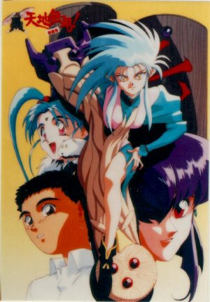

Tenchi Muyo!

From the Anime Pocket Guide:
Cast:
Tenchi Masaki ............................ Masami Kikuchi
Ryouko ....................................... Ai Orikasa
Ryo-Oh-Ki ............................... Etsuko Kozakura
Princess Aeka .............................. Yumi Takada
Princess Sasami ......................... Chisa Yokoyama
Detective Mihoshi ......................... Yuko Mizutani
Detective Kiyone ............................. Yuri Amano
Kamidake .................................. Kenichi Ogata
Azaka ..................................... Wataru Takagi
Katsuhito Masaki ........................... Takeshi Aono
Nobuyuki Masaki ........................... Takeshi Aono
Washuu ................................... Yuko Kobayashi
Kagato ................................... Norio Wakamoto
Tsunami .................................. Chisa Yokoyama
Yosho ................................... Takehito Koyasu
little Tenchi .............................. Mari Mashiba
(Unknown character) ...................... Hideyuki Umezu
okami (manager of the inn) ................ Hisako Kyouda
Dr. Cray .................................... Seizou Kato
D3 ................................... Ryuuzaburou Ohtomo
Misaki ............................... Yoshiko Sakakibara
Tokimi ....................................... Yumi Touma
Achika (Tenchi Muyou in Love) ........ Megumi Hayashibara
Description:
After tricking his grandfather, Tenchi gets the keys to an old
shrine. Family legend says that a hero defeated a horrific
demon long ago, and the demon was imprisoned here. The hero's
sword was placed next to the demon to guard it. Tenchi finds
the old sword...and a mummy. Since Tenchi broke the seals, the
mummy rises. Frantically, Tenchi tries to reseal the shrine and
escapes. Later, Tenchi is back at school. He is startled by a
girl who appears out of nowhere. This is Ryouko, space pirate,
former mummy, and a VERY annoyed demon. She decides to kill
Tenchi, 'cause she has to take it out on *someone*. Tenchi
escapes from the destroyed school...to find that Ryouko has
decided to move in with him. Things get REALLY interesting when
Aeka, Princess of the Jurai, comes to Earth looking for her
brother...the long-dead hero who sealed Ryouko up the first time.
This is a very funny, fast-moving action comedy with lots of
unique elements...including spaceships grown from trees and a
pirate ship that becomes a cute bunny...
NOTE: The title might also be translated as "This Side Up,Tenchi"
and, in fact, is carried that way at Nikaku. This is because
the kanji used can be interpreted more than one way...
NOTE: The rating for this entry is based less on how much I like
the series, and more on the fan reception that I saw at a con.
Other Resources
Anime Video Game Resource Center © 1998 by Luis A. Cruz